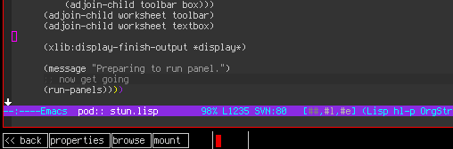
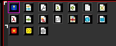

XIOMACS: a stumpwm/emacs oriented desktop hyper environment
Overview
The XIOMACS desktop environment combines stumpwm, emacs, and various small modules to create a complete power-user desktop. Goals include 100% keyboard AND mouse control, pervasive discoverability, and seamless integration between the Common Lisp and Emacs Lisp components of the experience.
The center of the XIOMACS experience is the xiomacs desktop manager panel which sits at the bottom of the screen like an Emacs mode-line. This is where one can find the menu, notifications, buttons, and launchers etc.
Scenarios
- The user presses a command hotkey and keyboard focus moves to the panel, which becomes blank except for a blinking cursor and a "Command:" prompt. The user types in http://www.google.com/ and hits RETURN. The user's configured web browser opens to google.com.
- The user types
stumpwm://fnextand stumpwm moves to the next frame. - The user types
mpd://nextand the music changes. - The user types
ejectand the default cd-rom drive ejects. - Obviously we can build graphical controls that issue those commands too. In fact the text commands are defined first, and their implementations are in the modules (whether in elisp or CL). XIOMACS merely provides a GUI toolkit for getting input and widgets that trigger such commands.
- The user plugs an SD card or external HDD. A drive icon with volume
name MUSIC appears in the panel. It is highlighted for a few
seconds, then fades to normal brightness. The user right-clicks the
icon; it expands into several side by side buttons in the panel:

(alternatively, the user types
mount musicat the panel prompt and hits Enter. just plain "mount" should default to the last plugged volume.)The user clicks
browseand a special Emacs frame pops up with dired (or image-dired, as appropriate) open on the MUSIC drive. - The user previews a few files, then decides to copy them all to his ~/incoming directory using dired.
- The user tries to unmount the drive via the panel, and is told that
the emacs process is still using the drive. (Usually gnome doesn't
tell you what program is using it, but you can find this out with
lsofso i see no reason not to tell the user.) - The user closes the emacs window and clicks unmount again, unmounting the disk.
Features and status
- WORKING: Custom CLOS GUI widget toolkit with minimalistic (but themeable) appearance.
- WORKING: Modeline-style panel window as the center of operations
- WORKING: Disk mounter system can mount disks by UUID and update /etc/fstab for you.
- DESIGN: General purpose notification area and status monitor
- DESIGN: Menu widget
- DESIGN: Unified command syntax with custom
protocol://linkdatastyle link handlers - DESIGN: Switch stumpwm groups with a panel click
- PLANNED: Emacs Dired as graphical file manager and image browser
- PLANNED: Jack Audio Connection Kit daemon manager panel widget
- PROGRESS: Color-coded icons for document and program types, some of these are already drawn: 